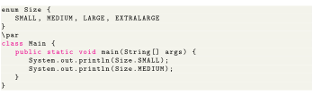
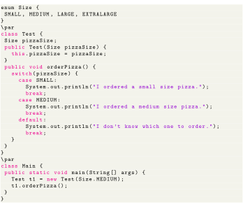
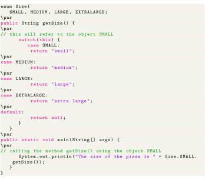

Next: Methods of enum Class Up: Object-Oriented Programming Previous: SOLID and GRASP guidelines Contents
In Java, enum types are considered to be a special type of class. It was introduced with the release of Java 5. An enum class can include methods and fields just like regular classes. Following is the syntaxt for enum class.

The enum constants are always public static final by default. When an enum class is created, the compiler will also create instances (objects) of each enum constants.
In Java, an enum (short for enumeration) is a type that has a fixed set of possible values. We use the enum keyword to declare enums. For example,

Here, we have created an enum named Size. The values inside the braces are called enum values (constants). These are the only values that the enum type can hold. The enum constants are usually represented in uppercase. Let’s take a simple example.

Output for the above code block will be as follows:

As we can see from the above example, we use the enum name to access the constant values. Also, we can create variables of enum types. For example, Size pizzaSize;. pizzaSize is a variable of the Size type. It can only be assigned with 4 values.


Output will be as follows:
In the above program, we have created an enum type Size. We then declared a variable pizzaSize of the Size type. The variable pizzaSize can only be assigned with 4 values (SMALL, MEDIUM, LARGE, EXTRALARGE). The variable pizzaSize is assigned with the MEDIUM constant. Based on this, one of the cases of the switch case statement is printed.

The output for the above code block is The size of the pizza is small. In the above example, we have created an enum class Size. It has four constants SMALL, MEDIUM, LARGE and EXTRALARGE. Since Size is an enum class, the compiler automatically creates instances for each enum constants. Here inside the main() method, we have used the instance SMALL to call the getSize() method.